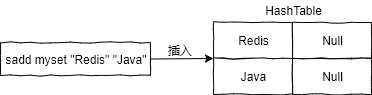

- 01 Redis 是如何执行的.md.html
- 02 Redis 快速搭建与使用.md.html
- 03 Redis 持久化——RDB.md.html
- 04 Redis 持久化——AOF.md.html
- 05 Redis 持久化——混合持久化.md.html
- 06 字符串使用与内部实现原理.md.html
- 07 附录：更多字符串操作命令.md.html
- 08 字典使用与内部实现原理.md.html
- 09 附录：更多字典操作命令.md.html
- 10 列表使用与内部实现原理.md.html
- 11 附录：更多列表操作命令.md.html
- 12 集合使用与内部实现原理.md.html
- 13 附录：更多集合操作命令.md.html
- 14 有序集合使用与内部实现原理.md.html
- 15 附录：更多有序集合操作命令.md.html
- 16 Redis 事务深入解析.md.html
- 17 Redis 键值过期操作.md.html
- 18 Redis 过期策略与源码分析.md.html
- 19 Redis 管道技术——Pipeline.md.html
- 20 查询附近的人——GEO.md.html
- 21 游标迭代器（过滤器）——Scan.md.html
- 22 优秀的基数统计算法——HyperLogLog.md.html
- 23 内存淘汰机制与算法.md.html
- 24 消息队列——发布订阅模式.md.html
- 25 消息队列的其他实现方式.md.html
- 26 消息队列终极解决方案——Stream（上）.md.html
- 27 消息队列终极解决方案——Stream（下）.md.html
- 28 实战：分布式锁详解与代码.md.html
- 29 实战：布隆过滤器安装与使用及原理分析.md.html
- 30 完整案例：实现延迟队列的两种方法.md.html
- 31 实战：定时任务案例.md.html
- 32 实战：RediSearch 高性能的全文搜索引擎.md.html
- 33 实战：Redis 性能测试.md.html
- 34 实战：Redis 慢查询.md.html
- 35 实战：Redis 性能优化方案.md.html
- 36 实战：Redis 主从同步.md.html
- 37 实战：Redis哨兵模式（上）.md.html
- 38 实战：Redis 哨兵模式（下）.md.html
- 39 实战：Redis 集群模式（上）.md.html
- 40 实战：Redis 集群模式（下）.md.html
- 41 案例：Redis 问题汇总和相关解决方案.md.html
- 42 技能学习指南.md.html
- 43 加餐：Redis 的可视化管理工具.md.html
12 集合使用与内部实现原理
集合类型 (Set) 是一个无序并唯一的键值集合。
之所以说集合类型是一个无序集合，是因为它的存储顺序不会按照插入的先后顺序进行存储，如下代码所示：
127.0.0.1:6379> sadd myset v2 v1 v3 #插入数据 v2、v1、v3
(integer) 3
127.0.0.1:6379> smembers myset #查询数据
1) "v1"
2) "v3"
3) "v2"
从上面代码执行结果可以看出，myset 的存储顺序并不是以插入的先后顺序进行存储的。
集合类型和列表类型的区别如下：
- 列表可以存储重复元素，集合只能存储非重复元素；
- 列表是按照元素的先后顺序存储元素的，而集合则是无序方式存储元素的。
1 基础使用
集合类型的功能比列表类型丰富一些，集合类型可以用来统计多个集合的交集、错集和并集，如下代码所示。
1）添加一个或多个元素
语法：sadd key member [member ...] 示例：
127.0.0.1:6379> sadd myset v1 v2 v3
(integer) 3
2）查询集合所有元素
语法：smembers key 示例：
127.0.0.1:6379> smembers myset
1) "v1"
2) "v3"
3) "v2"
3）查询集合的成员数量
语法：scard key 示例：
127.0.0.1:6379> scard myset
(integer) 3
4）查询集合中是否包含某个元素
语法：sismember key member 示例：
127.0.0.1:6379> sismember myset v1
(integer) 1
127.0.0.1:6379> sismember myset v4
(integer) 0
5）从一个集合中移动一个元素到另一个集合
语法：smove source destination member 示例：
127.0.0.1:6379> smembers myset
1) "v1"
2) "v3"
3) "v2"
127.0.0.1:6379> smembers myset2
1) "v1"
2) "v8"
127.0.0.1:6379> smove myset myset2 v3
(integer) 1
127.0.0.1:6379> smembers myset2
1) "v1"
2) "v8"
3) "v3"
127.0.0.1:6379> smembers myset
1) "v1"
2) "v2"
6）移除集合中一个或多个元素
语法：srem key member [member ...] 示例：
127.0.0.1:6379> smembers myset
1) "v4"
2) "v1"
3) "v3"
4) "v2"
5) "v5"
127.0.0.1:6379> srem myset v5
(integer) 1
127.0.0.1:6379> smembers myset
1) "v3"
2) "v2"
3) "v1"
4) "v4"
注意：使用 srem 指令，不存在的元素将会被忽略。 更多操作命令，详见附录部分。
2 代码实战
下面来看集合类型在 Java 中的使用，同样先添加 Jedis 框架，使用代码如下：
import redis.clients.jedis.Jedis;
import java.util.Set;
public class SetExample {
public static void main(String[] args) {
Jedis jedis = new Jedis("xxx.xxx.xxx.xxx", 6379);
jedis.auth("xxx");
// 创建集合并添加元素
jedis.sadd("set1", "java", "golang");
// 查询集合中的所有元素
Set<String> members = jedis.smembers("set1");
System.out.println(members); // 输出：[java, golang]
// 查询集合中的元素数量
System.out.println(jedis.scard("set1"));
// 移除集合中的一个元素
jedis.srem("set1", "golang");
System.out.println(jedis.smembers("set1")); // 输出：[java]
// 创建集合 set2 并添加元素
jedis.sadd("set2", "java", "golang");
// 查询两个集合中交集
Set<String> inters = jedis.sinter("set1", "set2");
System.out.println(inters); // 输出：[java]
// 查询两个集合中并集
Set<String> unions = jedis.sunion("set1", "set2");
System.out.println(unions); // 输出：[java,golang]
// 查询两个集合的错集
Set<String> diffs = jedis.sdiff("set2", "set1");
System.out.println(diffs); // 输出：[golang]
}
}
3 内部实现
集合类型是由 intset (整数集合) 或 hashtable (普通哈希表) 组成的。当集合类型以 hashtable 存储时，哈希表的 key 为要插入的元素值，而哈希表的 value 则为 Null，如下图所示： 
当集合中所有的值都为整数时，Redis 会使用 intset 结构来存储，如下代码所示：
127.0.0.1:6379> sadd myset 1 9 3 -2
(integer) 4
127.0.0.1:6379> object encoding myset
"intset"
从上面代码可以看出，当所有元素都为整数时，集合会以 intset 结构进行(数据)存储。 当发生以下两种情况时，会导致集合类型使用 hashtable 而非 intset 存储： 1）当元素的个数超过一定数量时，默认是 512 个，该值可通过命令 set-max-intset-entries xxx 来配置。 2）当元素为非整数时，集合将会使用 hashtable 来存储，如下代码所示：
127.0.0.1:6379> sadd myht "redis" "db"
(integer) 2
127.0.0.1:6379> object encoding myht
"hashtable"
从上面代码可以看出，当元素为非整数时，集合会使用 hashtable 进行存储。
4 源码解析
集合源码在 t_set.c 文件中，核心源码如下：
/*
* 添加元素到集合
* 如果当前值已经存在，则返回 0 不作任何处理，否则就添加该元素，并返回 1。
*/
int setTypeAdd(robj *subject, sds value) {
long long llval;
if (subject->encoding == OBJ_ENCODING_HT) { // 字典类型
dict *ht = subject->ptr;
dictEntry *de = dictAddRaw(ht,value,NULL);
if (de) {
// 把 value 作为字典到 key，将 Null 作为字典到 value，将元素存入到字典
dictSetKey(ht,de,sdsdup(value));
dictSetVal(ht,de,NULL);
return 1;
}
} else if (subject->encoding == OBJ_ENCODING_INTSET) { // inset 数据类型
if (isSdsRepresentableAsLongLong(value,&llval) == C_OK) {
uint8_t success = 0;
subject->ptr = intsetAdd(subject->ptr,llval,&success);
if (success) {
// 超过 inset 的最大存储数量，则使用字典类型存储
if (intsetLen(subject->ptr) > server.set_max_intset_entries)
setTypeConvert(subject,OBJ_ENCODING_HT);
return 1;
}
} else {
// 转化为整数类型失败，使用字典类型存储
setTypeConvert(subject,OBJ_ENCODING_HT);
serverAssert(dictAdd(subject->ptr,sdsdup(value),NULL) == DICT_OK);
return 1;
}
} else {
// 未知编码(类型)
serverPanic("Unknown set encoding");
}
return 0;
}
以上这些代码验证了，我们上面所说的内容，当元素都为整数并且元素的个数没有到达设置的最大值时，键值的存储使用的是 intset 的数据结构，反之到元素超过了一定的范围，又或者是存储的元素为非整数时，集合会选择使用 hashtable 的数据结构进行存储。
5 使用场景
集合类型的经典使用场景如下：
- 微博关注我的人和我关注的人都适合用集合存储，可以保证人员不会重复；
- 中奖人信息也适合用集合类型存储，这样可以保证一个人不会重复中奖。
6 小结
通过本文我们知道了，集合类型是由整数集合 (intset) 或者是哈希表 (hashtable) 组成的，集合类型比较适合用来数据去重和保障数据的唯一性，除此之外，集合类型还可以用来统计多个集合的交集、错集和并集 (见附录)。当我们存储的数据是无序并且需要去重的情况下，比较适合使用集合类型进行存储。